M78: band labels readable on every band layer
| Item | Before | After |
|---|---|---|
| F1 label over candles | text painted under the candles (bottom layer); wicks cross it | rounded chip (chart background, 85 %) + text in a second view above the series |
| F2 contrast (text / chip, token values) | text on the band fill, no chip | dark: buyer 8.59, seller 5.20; light: buyer 5.02, seller 6.47 (all ≥ 4.5); a colour under 4.5 falls back to the chart text token (dark 11.87, light 7.58) |
| F2 size | 11 px (below the 12 px axis labels) | the chart's axis-label size (12 px at Normal, grows with the text size) |
| F3 same text | Copilot "Seller area"; Charts "Seller area · 15m · fresh" | one formatter: "Seller area · 1d · fresh" / "Seller area · 15m · fresh" (parts the data lacks are dropped) |
| F4 left edge | text 4 px from the pane edge | chip 4 px inside the pane, text 8 px (same on the right, before the price axis) |
| F5 band prices | none (axis tags removed in #847) | tap (phone) / hover (desktop) on a band or its label: label, Top, Bottom in place; tap elsewhere / Escape closes |
Measured, not hidden: the chip lets 15 % of what is under it through; with a candle body right under the text the worst cases are dark seller 4.18 and light buyer 3.88 (against the chip alone: 5.20 / 5.02).
Copilot answer chart ("Read the SENSEX chart"; the area carries its timeframe and state)
Phone 390 - light
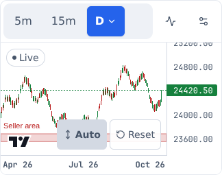
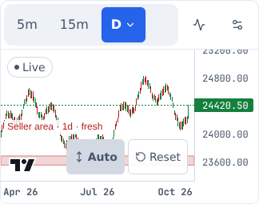
Phone 390 - dark
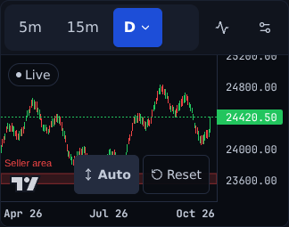
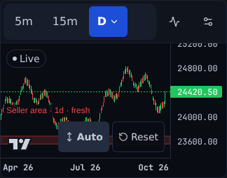
Desktop 1440 - light
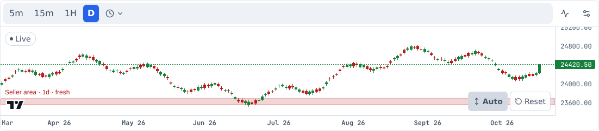
Desktop 1440 - dark

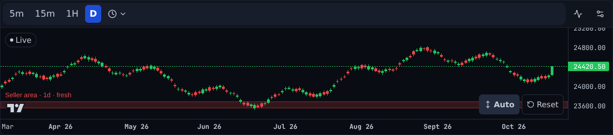
Charts tab - "Read this chart" (seller + buyer areas)
Phone 390 - light
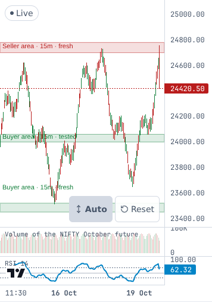
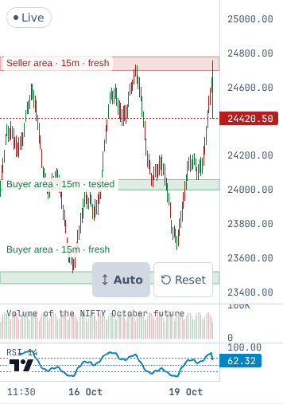
Phone 390 - dark
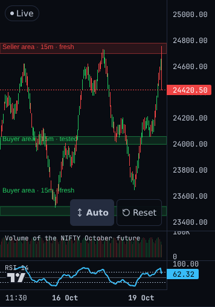
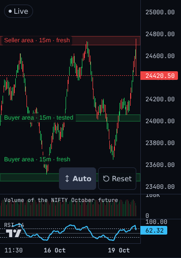
Desktop 1440 - light
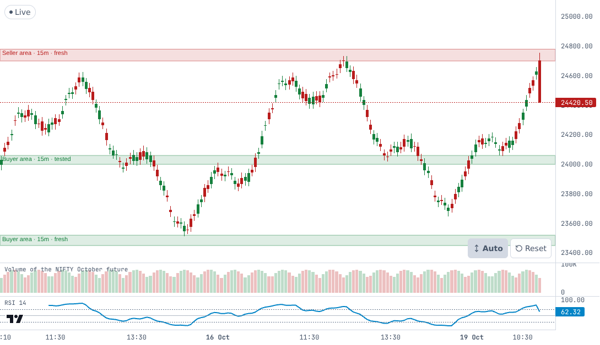
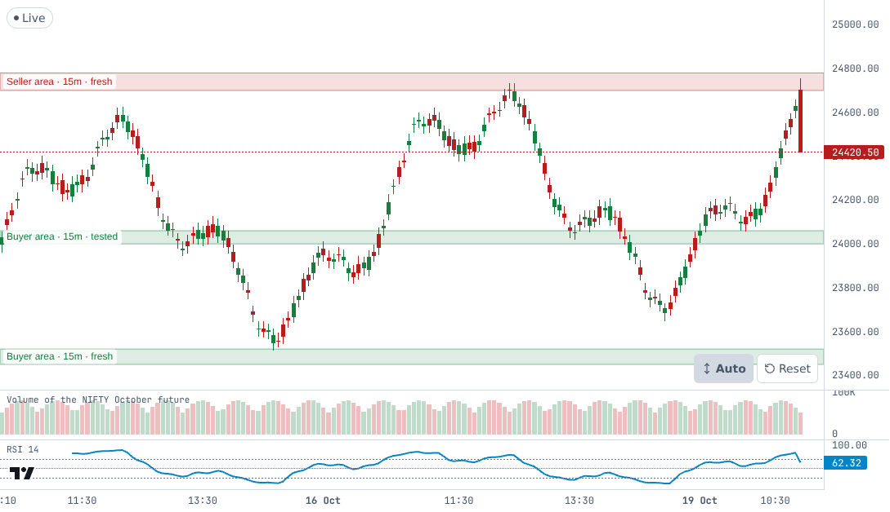
Desktop 1440 - dark

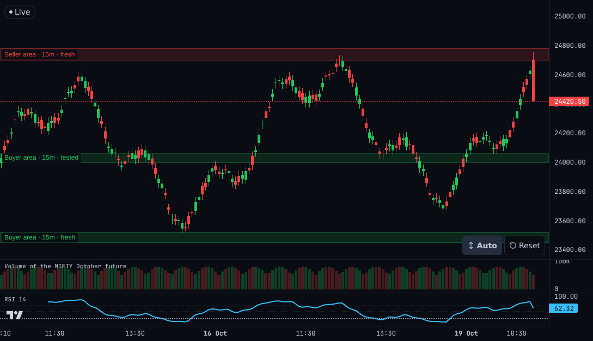
F5 - a tap on a band (phone 390, dark)
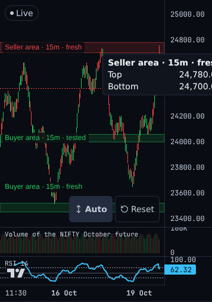